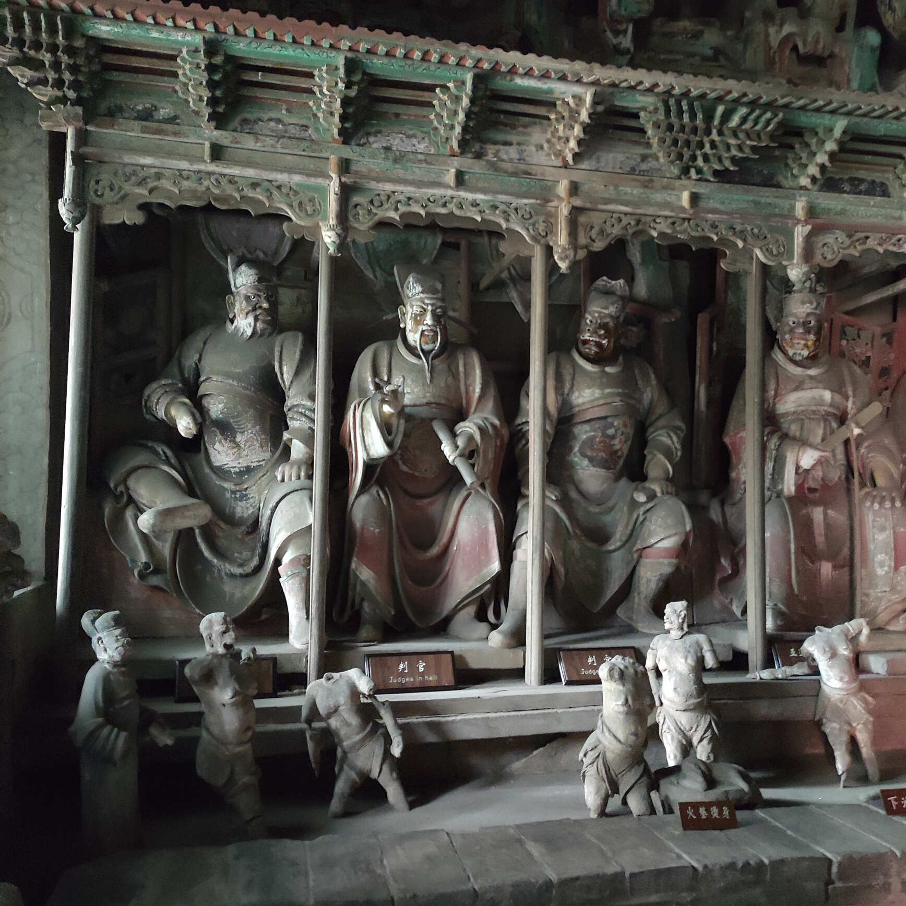
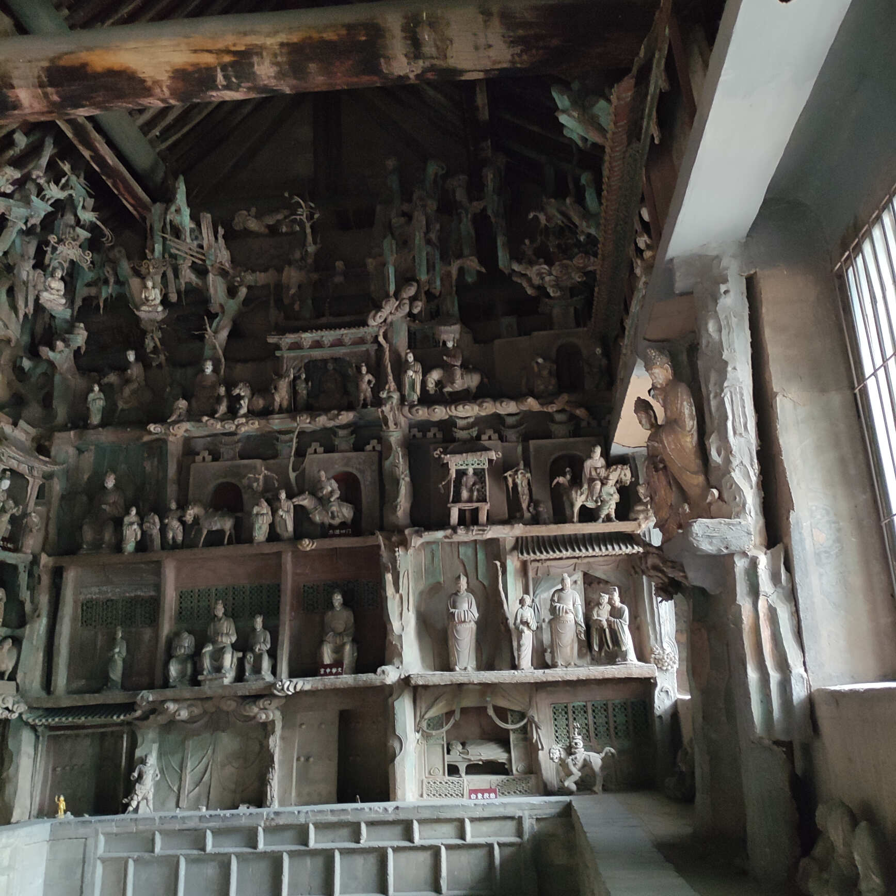
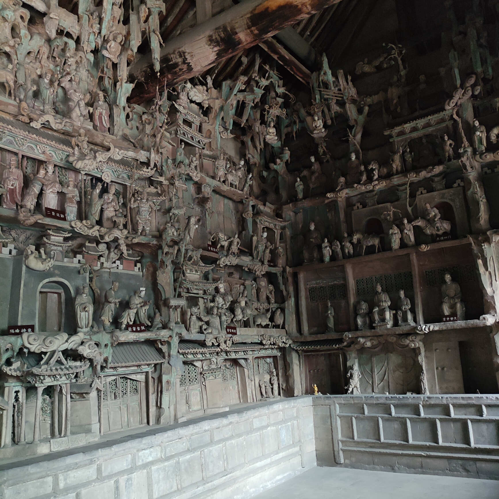
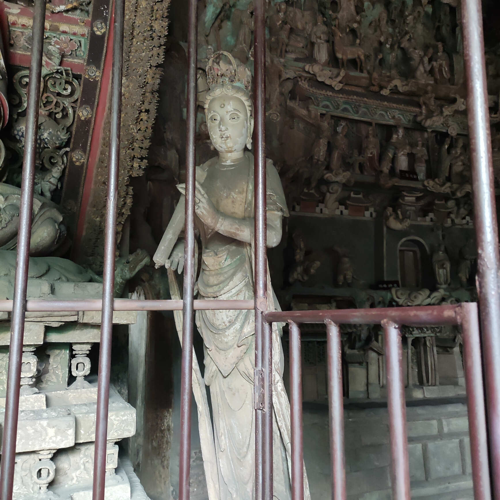
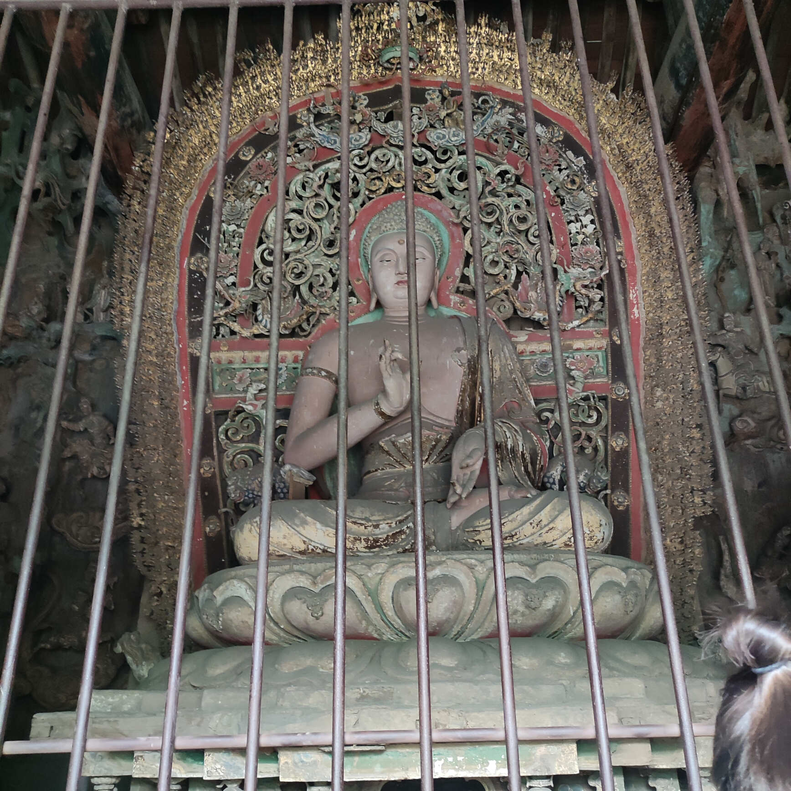
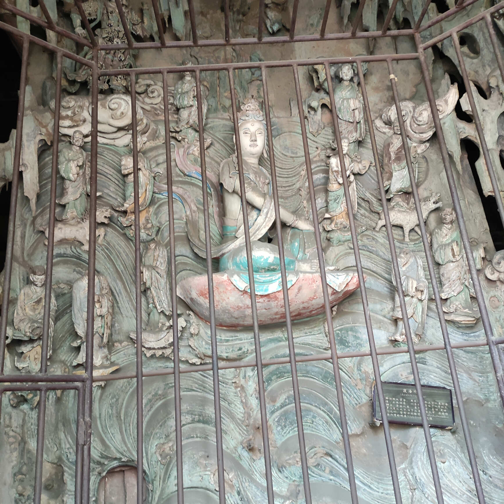
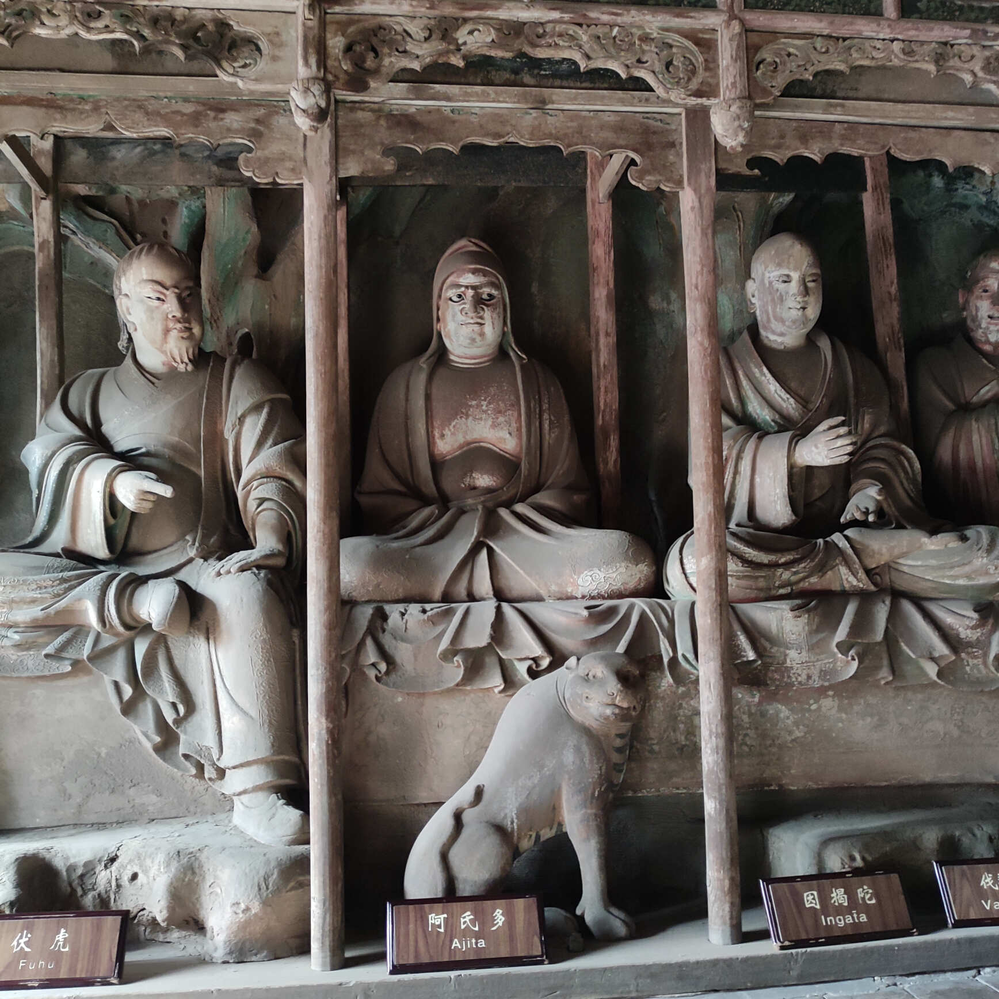

太原到平遥的高铁很快，半小时就到了，出了平遥高铁站，旁边就是去古城和双林寺的公交车，票价1元，这里要换晋中市的乘车码啊，换城市了。
双林寺的大门
双林寺被确定为文物保护单位的牌子，红墙很好看。
入门的天王殿，维修中，门外的四位金刚都没看到，更别提里面的弥勒佛和围绕其的四大天王和八大菩萨。
加一段佛教知识：
金刚，原意指众神之王因陀罗的武器金刚降魔杵。在佛教中，金刚比喻坚固、锐利、能摧毁一切。金刚化为人形立于山门之前，无不展示其斩妖除魔之力量，更向世人展示成为大觉悟之人应有之驱动力。
四大天王是中国汉传大乘佛教中四尊守法尊天神的代称，守护被称为"宝藏"的须弥山。四位天王名称不同，各有寓意，代表着佛对世人的指引与期望。
东方持国天王，手持琵琶。持国者，持重也。为人之道应如弹琵琶，不过快，不过慢，所谓老谋持成，稳重，过犹不及。
西方广目天王，手持赤练蛇。广目者，多看远看也。蛇代表世间万物不停变化，所谓无常。欲求大智慧的人，应该看的多，想的多，才能看清事物变化，深谋远虑。
北方多闻天王，手托之物应为宝塔，俗称"托塔天王"。不过后世北方多闻天王多改持一柄宝伞，宝伞意味着遮挡。世事无常，有种种染污，广学多闻才能知好歹，才能理智的了解社会与人事，不误入歧途。
南方增长天王，手持宝剑。佛教育世人需精益求精，不停增长。宝剑象征快刀斩乱麻，消除烦恼，增进智慧。孔子曰士不可以已，是殊途同归。
下面是阎罗殿，阎罗殿不仅有十大阎罗，还有地狱中的种种酷刑，如上刀山、下火海，都给样例展示了，可惜这些塑像都残缺不全了。

释迦殿，介绍了成佛过程的故事，如白象入胎等


佛旁边的菩萨。

释迦牟尼佛

背面的影壁墙，度海观音，坐在红色的莲花瓣上，后面是波涛汹涌的浪花。

罗汉殿，哑罗汉，有满腹的话想说，却说不出来

千佛殿也在维修中，无缘得见著名的韦陀像和自在观音了。
菩萨殿，里面的千手观音，后面还有满墙的悬塑，据说每一个人物都是观音菩萨的化身。
寺庙里的对联不错。
说法中都古寺信解行证遁玄门在出世间双林入灭
现身迦毗罗卫慈悲喜舍度娑婆天上天下唯我独尊
宝相庄严仰法身报身应身万缘皆是慈悲念
梵音微妙合戒学定学慧学一悟顿生欢喜心
无我无人无众生寿者皆无为法
如露如电如梦幻泡影应如是观